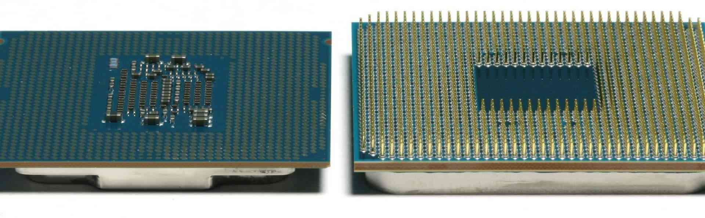
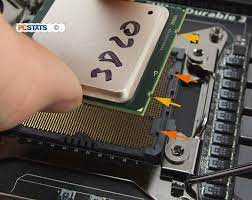

Instalação da CPU e Gestão Térmica
A instalação do processador é o momento de maior risco físico. Um pino dobrado pode inutilizar uma placa-mãe de alto custo instantaneamente.
🚀 Insight Técnico: O IHS (Integrated Heat Spreader) da CPU não é perfeitamente plano. A pasta térmica existe exclusivamente para preencher as cavidades microscópicas do metal e expulsar o ar, que é um péssimo condutor de calor.

1. Arquitetura de Soquete (LGA vs PGA)
Identifique sua plataforma antes de começar. A manipulação muda drasticamente entre elas.
LGA (Intel/AMD AM5): Os pinos estão na placa-mãe. São extremamente frágeis. Nunca toque neles ou passe panos.
PGA (AMD AM4): Os pinos estão na CPU. O maior risco aqui é entortá-los ao remover o cooler no futuro (sempre "gire" o cooler antes de puxar).
PGA (AMD AM4): Os pinos estão na CPU. O maior risco aqui é entortá-los ao remover o cooler no futuro (sempre "gire" o cooler antes de puxar).

2. A Orientação ZIF (Zero Insertion Force)
O processador possui "chaves" físicas (cortes laterais) e marcas visuais para garantir que só entre de um jeito.
Checklist de Segurança: Alinhe o triângulo dourado da CPU com o triângulo no soquete. Solte a CPU suavemente; ela deve "assentar". Se houver qualquer balanço ou resistência, pare imediatamente.

3. Dinâmica de Fluidos Térmicos
Quantidade excessiva isola o calor; quantidade insuficiente causa hot-spots.
Método Profissional: Para CPUs modernas com múltiplos "chiplets" (como Ryzen), o método de X ou 5 pontos garante cobertura total dos núcleos que não estão exatamente no centro.
Nota: Evite espalhar com o dedo, pois a oleosidade da pele reduz a condutividade.
Nota: Evite espalhar com o dedo, pois a oleosidade da pele reduz a condutividade.

4. Pressão de Montagem e Torque
A montagem do cooler exige pressão equalizada para evitar que a pasta seja expulsa de um lado só.
Técnica em Cruz (X): Aperte o parafuso superior esquerdo levemente, depois o inferior direito. Repita para os outros. Somente após todos estarem encaixados, dê o aperto final. Isso evita rachaduras microscópicas no PCB.

5. Monitoramento PWM (CPU_FAN)
O sistema precisa de feedback de rotação para gerenciar a curva de temperatura.
Atenção: Use sempre o header CPU_FAN (geralmente cinza/branco). Se usar o SYS_FAN, a placa-mãe pode não aumentar a velocidade da ventoinha quando a CPU esquentar, causando desligamentos de emergência.
Pronto para o Stress Test?
A montagem correta da CPU define a estabilidade de todo o sistema. Teste seus conhecimentos técnicos agora.